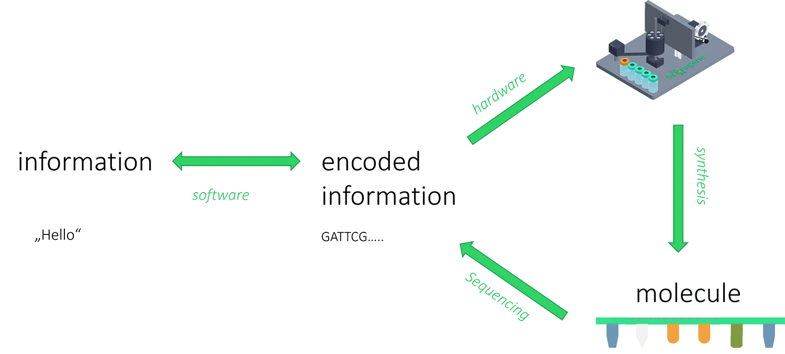
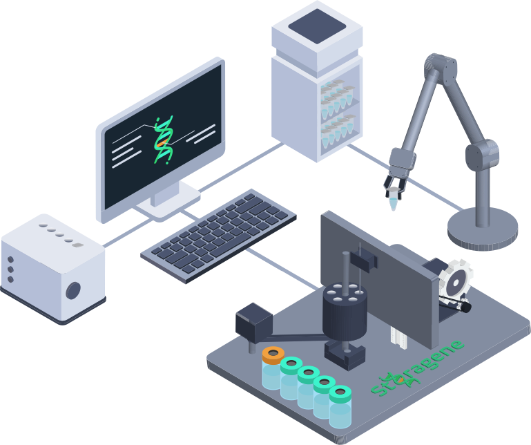

Working in Subgroups
One of our main goals during the iGEM project was to work as much as we could in subgroups and parallelize all of our work. Thus, we created teams for Design, Hardware, Software, Lab work, and much more. This segmentation allowed us not only to establish our lab progress but also build the hard- and software to execute it automatically. In the past months, we managed to design and build a DNA synthesis system, which works with easy immobilization techniques, straightforward software, and a self-built hardware.
The Flow of Information in Our System
We developed a synthesis method, which can be part of a complete data storage system. Imagine seeing a black box, maybe the size of a regular drawer with one interface for input and one for output. On the inside tons of information are stored, from the outside it is just a black box. If information is put in, for example, a document or an image, it would first be stored in a cache for processing purposes, then encoded into DNA-code by our software and finally be synthesized by our Hardware “DIPsy” or one of its successors. To store the synthesized DNA strands over decades and make them more durable, they would be encapsulated in silica particles 1. The resulting orb would then be labeled for easier retrieving and stored in a specific space inside the black box. To retrieve certain information, it is necessary to search in the database of the storage system. After choosing the desired information, the system would find the orb with the right label and solve it in a fluoride solution. This solution would prospectively be sequenced via nanopore sequencing and decoded into digital information.

Figure 1: The flow of information in our system.
A storage system as described above could be installed in any institution with a demand for enormous data storage and still their data saving needs would always be fulfilled. In theory, the storage could also be connected to the internet. This would raise the issue of security but also give more opportunities like off-site backups, which are useful e.g. when a fire breaks out.
Application of Our DNA Data Storage System
DNA can function as an immense, long-lasting data storage, but it is not suited for every application yet. To read out the encoded information, DNA sequencing is required, which limits the reading time to the speed of sequencing. Even though its application is limited at present, DNA data storage will form an indispensable system soon. Institutions like archives and libraries will probably form the first users of DNA data storage. Without the need to read out the data frequently, our system could potentially dominate any other system currently on the market. But there are more. Hospitals, for example, are potential users of DNA storage systems. They could store and backup patients’ medical history and family disease data. But it does not stop there. Police records, insurance, and family history, financial files, and much more data could possibly be saved on DNA.

Figure 2: DIPsy as part of a synthesizing, sequencing, and storage system for multiple applications.
With optimization of the system and decreasing reading and writing times, it will become available for an even broader audience. With Storagene we created a project that goes beyond everything we could ever imagine. How will our life look like, if DNA data storage will succeed? We can not wait to find out.